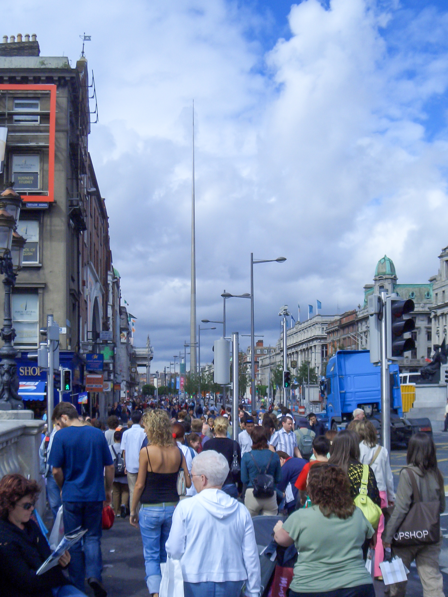

The Glens County
The Orchard County
The Dolmen County
The Breffni County
The Banner County
The Rebel County
The Oak Leaf County
The Forgotten County
The Mourne County
The Pale County

The Lakeland County
The Tribes County
The Kingdom
The Thoroughbred County
The Marble County
The O'Moore County
The Ridge County
The Treaty County
The O'Farrell County
The Wee County
The Maritime County
The Royal County
The Drumlin County
The Faithful County
The Sheep County
The Yeats County
The Premier County
The O'Neill County
The Déise County
The Lake County
The Model County
The Garden County